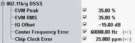

A poor modulation accuracy of the transmitter increases the transmission errors. The error vector magnitude (EVM) is the critical quantity to assess the modulation accuracy of a transmitter.
According to IEEE, the peak EVM of a DSSS signal must not exceed 35 %. This limit must be checked for 1000 samples (chips) of a burst. Center frequency and chip clock tolerance are specified in ppm of the carrier frequency: Errors must not exceed ±25 ppm. For channel 1, the limit is 25 ppm of 2.412 GHZ = 60.3 kHz.
Characteristics | Refer to IEEE 802.11-2012, section... | Specified limit |
|---|---|---|
Peak EVM | 16.4.7.10/17.4.7.9 Transmit modulation accuracy | < 35% |
Frequency error | 16.4.7.6/17.4.7.5 Transmit center frequency tolerance | < ±25 ppm1) |
Chip clock error | 16.4.7.7/17.4.7.6 Chip clock frequency tolerance | < ±25 ppm1) |
1) of the carrier frequency | ||
All limits can be set in the configuration dialog:
